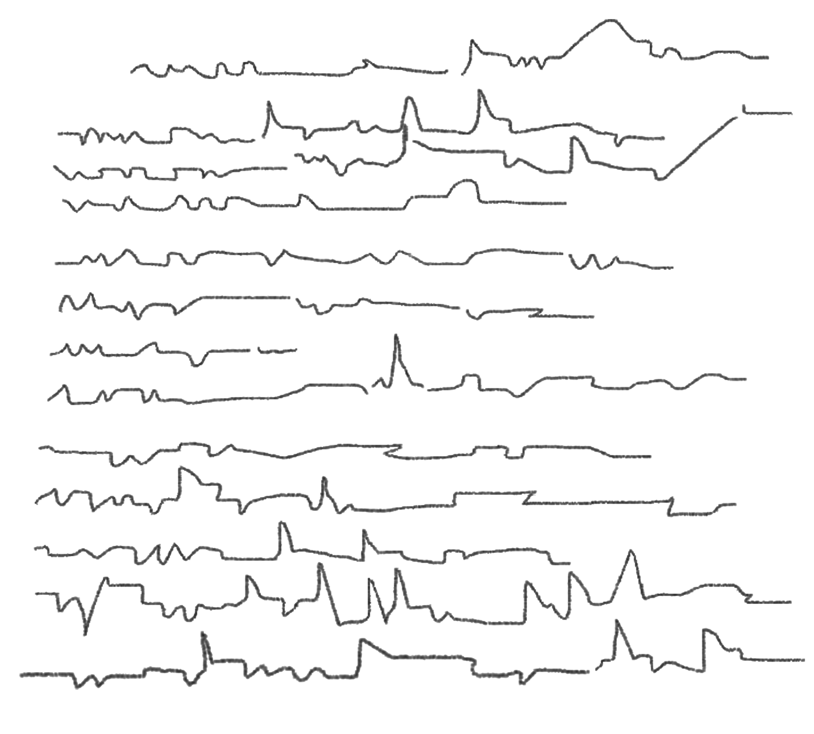
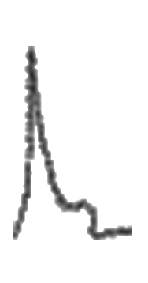
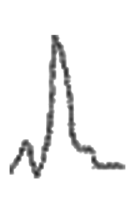
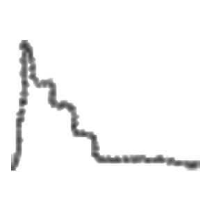
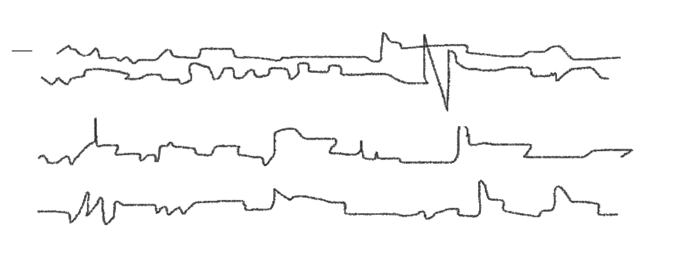
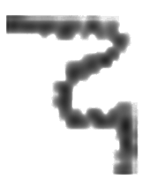
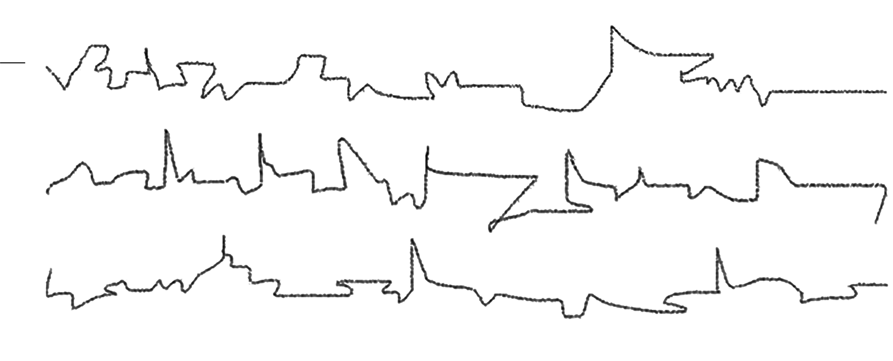
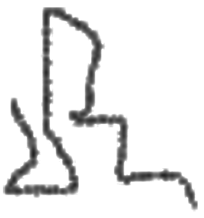

Tradução   
— Após 56 dias terráqueos de observações sobre os 196 países que compõem o mapa político do planeta — denominado Terra por seus habitantes —, apresentamos os seguintes dados:
Os humanos, desde que alcançaram, há cerca de 300 mil anos antes do presente, um nível de desenvolvimento cultural ao qual denominam estágio sapiens , passaram a operar ininterruptas mutações e se diversificaram significativamente, estabelecendo profundas relações com os sistemas naturais aos quais estavam ligados.
À medida que se espalhavam pelos diferentes biomas, tornavam-se mais competentes em seus processos de arraigamento ecológico . No interior desses processos, cada um dos diferentes grupos humanos que se constituía seguiu elaborando, além de distintas tecnologias capazes de suprir as necessidades que surgiam ao longo de suas jornadas, também variados sistemas cosmogônicos para dar sentido ao mundo — ou seja, para explicar uma infinidade de fenômenos que desafiavam sua compreensão, como as variações climáticas abruptas, a origem das coisas do mundo e a própria morte.
Tais explicações eram repassadas às gerações seguintes por meio de relatos míticos, aos quais, com o tempo, foram sendo incorporados novos elementos, como acontecimentos sociais, dando origem a amplos sistemas de crenças e religiosidades.
Ao se sedentarizarem, cada sociedade passou a produzir, ininterruptamente, variadas escalas de desejos e necessidades que deveriam ser saciadas. Tais anseios iam desde o esforço intelectual para compreender o funcionamento e a origem das coisas do mundo até as ambições pessoais e coletivas por conquistas materiais, ideológicas e políticas.
Na mesma medida em que essas escalas de desejos e necessidades se ampliavam entre as diferentes sociedades sedentarizadas, ampliava-se também a produção de conhecimentos, de tecnologias e até de conflitos. Assim, a troca de saberes e de estranhamentos constituiu-se numa espécie de dínamo do desenvolvimento e das relações entre as sociedades humanas.
p. 05Todas essas aspirações sociais se converteram em dois diferentes planos de valores: um, ligado às conquistas materiais e de poder — estes, motivadores de violências, crimes, desigualdade social , guerras e da destruição dos ecossistemas do planeta ; e outro, ligado à produção de conhecimentos capazes de compreender não apenas os sentidos e motivações por meio dos quais a humanidade produz tais valores e práticas sociais nocivas, mas também conhecimentos complexos sobre o funcionamento da “teia da vida” . No interior desse segundo plano de valores, desenvolve-se uma interessante parcela da população que vem dedicando suas atenções e energias ao esforço de mudar a percepção da humanidade a respeito do que, de fato, é a vida, de como ela funciona e, sobretudo, de como se autoperceber como parte dela, a fim de coexistir de forma pacífica e sustentável.
Entretanto, o fato mais intrigante que emerge das relações entre esses dois planos de valores é que, apesar de uma parcela da humanidade — submetida às ideias que valorizam as conquistas materiais e o poder — admitir e aprovar os conhecimentos voltados para uma coexistência pacífica e sustentável com o planeta, ela não consegue converter tais conhecimentos em atitudes socioambientais sustentáveis no cotidiano.
E, enquanto esses dois planos continuarem coexistindo sem que seja possível aplicar, em seus sistemas produtivos, os conhecimentos socioambientais alcançados, o planeta continuará a aumentar, progressivamente, a escassez de seus bens naturais, os níveis de poluição e sua temperatura média — até o ponto de provocar uma cadeia irreversível de colapsos em todos os seus ecossistemas.
Em outras palavras: se os terráqueos continuarem, irrefletidamente, presos ao processo desenfreado de industrialização e consumo, serão completamente extintos em um curto espaço de tempo.
Por fim, concluímos que os terráqueos coexistem no interior de um curioso paradoxo socioambiental. Ou seja, quanto mais os humanos aprofundam seus conhecimentos sobre o funcionamento dos ecossistemas — bem como sobre os danos ambientais provocados por suas próprias ações —, mais investem em modelos de vida capazes de comprometer os mesmos sistemas que garantem sua própria existência.

— Após este conselho analisar o relatório, chegou-se à conclusão de que há um potencial perigo de o referido paradoxo socioambiental, desenvolvido pelos terráqueos ao longo desses 300 mil anos, vir a ser reproduzido em outros planetas de nossa jurisdição que possuem condições ambientais análogas às da .
Assim, decretamos que um de nossos melhores oficiais em Ecologia Intergaláctica, o oficial  , deverá se metamorfosear em uma cidadã ou cidadão terráqueo e assumir alguma função específica no quadro de profissões existentes naquele planeta.
, deverá se metamorfosear em uma cidadã ou cidadão terráqueo e assumir alguma função específica no quadro de profissões existentes naquele planeta.
Sublinhamos que a escolha do local e da função será crucial para que o paradoxo socioambiental relatado possa ser profundamente analisado.
Finalmente, informamos que o oficial  terá exatamente
— Eu, oficial , respeitosamente apresento a este Conselho Intergaláctico o meu plano para a missão:
O local escolhido foi o país denominado Brasil, devido ao fato de ser uma região megadiversa. Trata-se da nação com a maior biodiversidade de flora e fauna do planeta; possui uma das maiores extensões territoriais, com 8.511.965 km², fazendo fronteira com quase todos os países da América do Sul, com exceção do Equador e do Chile; apresenta uma das maiores linhas costeiras contínuas, com 7.491 km; por seu tamanho continental e variedade de relevo, possui grande diversidade de tipos climáticos ; abriga a maior quantidade renovável de água doce entre os países do mundo ; concentra o maior número de povos indígenas ; está entre os países com maior potencial de expansão agrícola em áreas agricultáveis ainda não utilizadas, bem como o terceiro maior produtor de alimentos do planeta, ou seja, um dos países considerados como sendo “celeiro do mundo” .
p. 06Assim, eu, oficial , me transmutarei em um profissional da educação, assumindo sua identidade enquanto a missão durar.
— Esta missão será iniciada dentro de horas-luz, conforme determinação deste conselho.

— Eu, 
Que a força esteja com você, jovem .